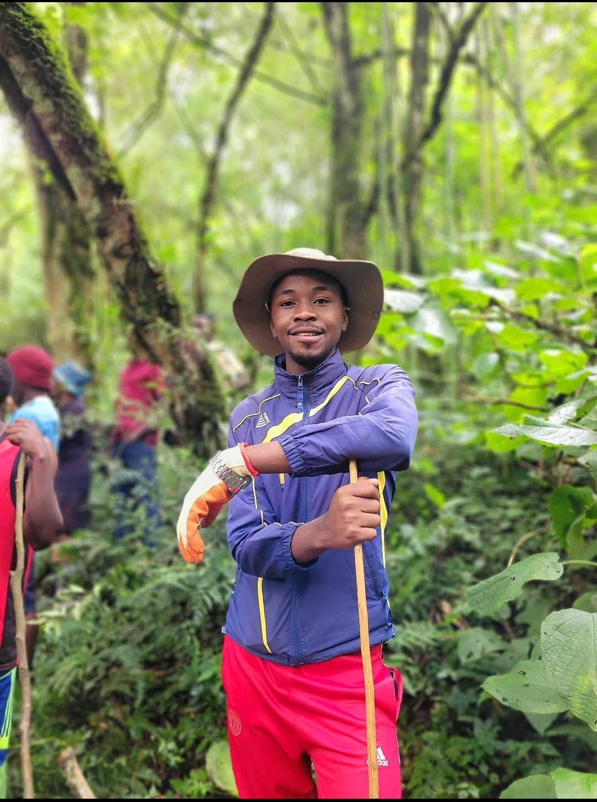
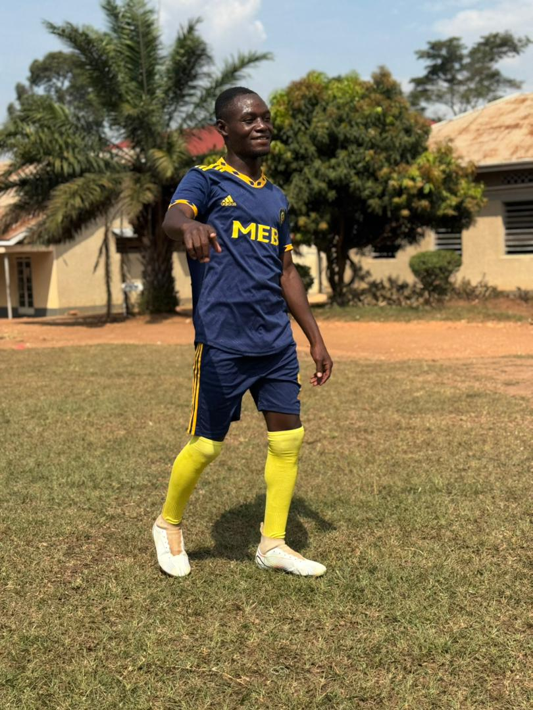
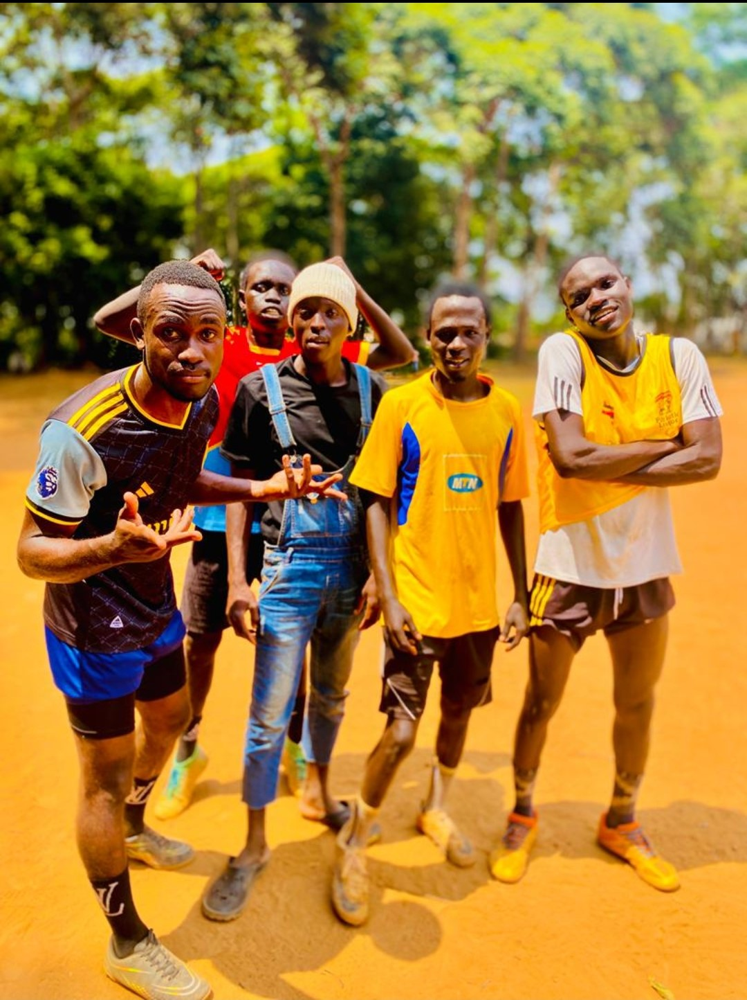

🎯 My Diverse Hobbies & Interests
I believe in maintaining a balanced life that stimulates the body, mind, and spirit. My interests span across outdoor adventure, creative expression, team building, and continuous intellectual growth.

⛰️ Outdoor Activities
- Hiking
- Camping
- Cycling
- Running
✏️ Creative Pursuits
- Drawing
- Music (Singing)
- Writing

⚽ Sports & Fitness
- Team sports (Soccer)
- Jogging
🧠 Intellectual Pursuits
- Reading
- Studying Science and carrying out calculations (Mathematics)
- Writing short stories
- Learning coding and programming (ICT)

🤝 Social Activities
- Joining a sports team
- Going on group outings
- Mentoring and coaching others